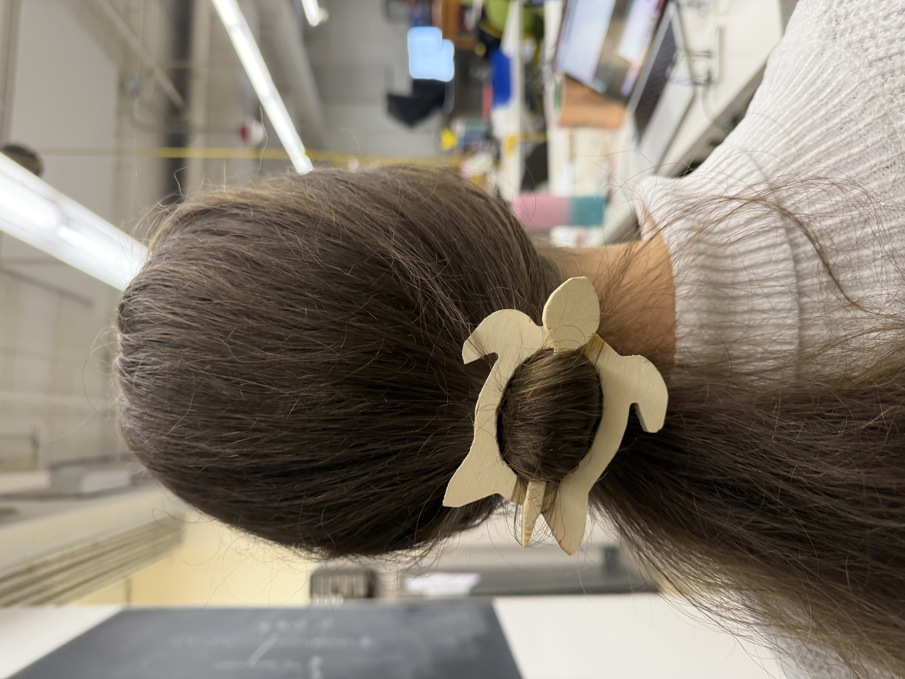
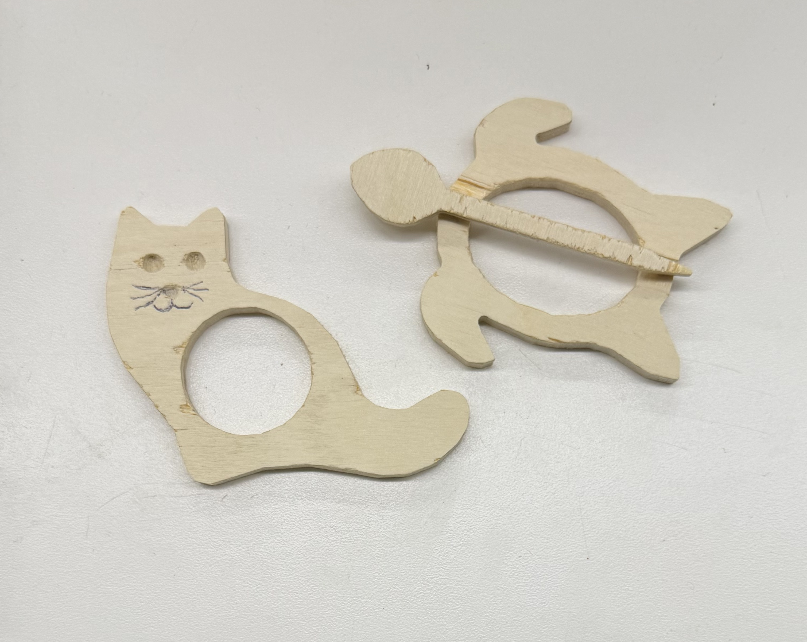
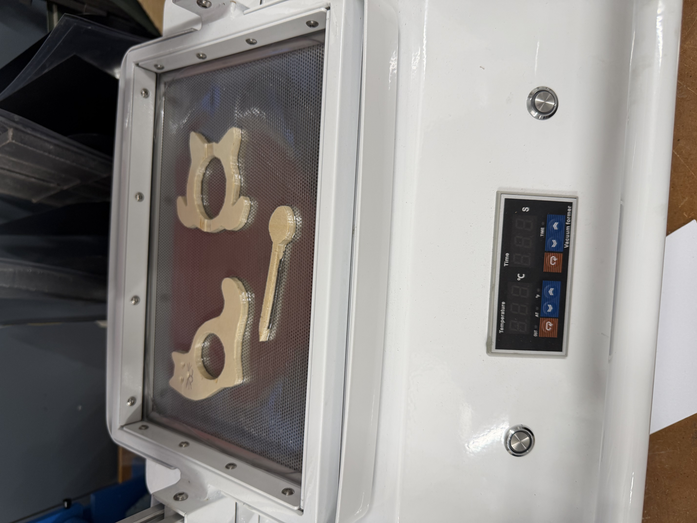
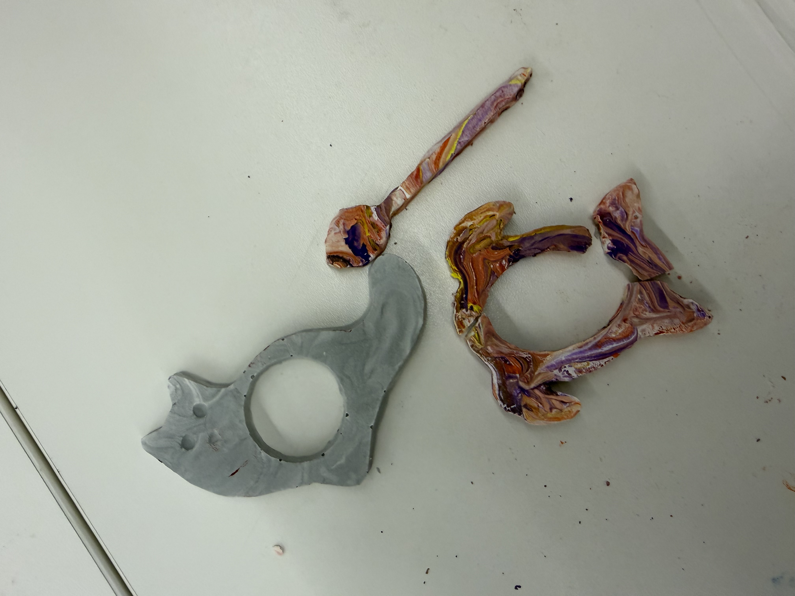

<div class="textcontainer">
<p class="margin"> </p>
<h3>Week 8: CNC Milling</h3>
<h4>Assignment: Make Something With CNC</h4>
<section>
<h3>CNC Week</h3>
<p>
For CNC week, I first tried to make a hair comb in the shape of a deer. The design had some nice cutouts and pocket toolpaths, where the milling machine cuts partway into the material instead of cutting all the way through. However, the teeth of the comb were too fine, so it did not end up working that well.
</p>
<p>
Instead, I still decided to make something for the hair: a turtle hair clip. I also made a cat book holder.
</p>
<p></p>
<p>
After CNC milling my designs, I went over to vacuum forming. After vacuum forming and creating the molds for my designs, I was able to cast them. I also tried to play with different colors to give the pieces a more interesting look. For the cat, I used gray tones to create a marble-like effect because my own cat is a gray British Shorthair. For the hair clip, I tried a more colorful design.
</p>
<p>
Below, I show how the hair clip works. Unfortunately, one of the molded pieces broke when it fell down, probably because it had not fully dried yet. I am planning to cast it again. I also included a picture showing how the hair clip sits in the hair. When the pieces are separate, it does not immediately look like a turtle, but once it is placed in the hair, the turtle shape becomes much clearer.
</p>
<p>
I also used pocket toolpaths for some of the details. On the turtle clip, the pocketed area is in the middle, where the top part of the clip fits into place. On the cat, I used pocket toolpaths for the eyes and nose, which worked pretty well during the molding and casting steps.
</p>
<p></p>
<br><br>
<p></p>
<br><br>
<p></p>
</section>
</div>